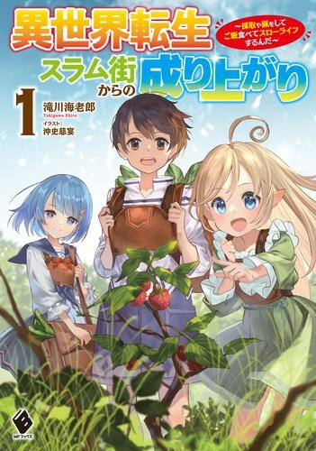

【1300万PV突破・書籍化・コミカライズ】
エド6歳。城塞都市外スラム在住。ある日、前世の記憶を思い出す。
豆だけの食事から、鑑定で食べられる野草・キノコを採取して食生活改善を開始。ハーブティーやジャムを売り、やっと買えた武器でゴブリンや一角ウサギを狩ったり、まったりしたりしながらスローライフを楽しむ。
かわいい同居のミーニャと幼馴染のラニアの二人の幼女と一緒に、いい生活を目指して成り上がろう。
小説

表紙：異世界転生スラム街からの成り上がり 1巻>">
異世界転生スラム街からの成り上がり 1
滝川海老郎／イラスト：沖史慈宴 ／KADOKAWA／MFブックス
異世界転生スラム街からの成り上がり 2
滝川海老郎／イラスト：沖史慈宴 ／KADOKAWA／MFブックス
コミカライズ
異世界転生スラム街からの成り上がり（漫画）
漫画：幾夜大黒堂／原作：滝川海老郎／キャラクター原案：沖史慈宴
双葉社／がうがうモンスター／モンスターコミック
Web版
異世界転生スラム街からの成り上がり（Web版）
通常Web版 37万文字
全170話 完結
総ルビ版
25万文字 104話 掲載中
キャラクター紹介